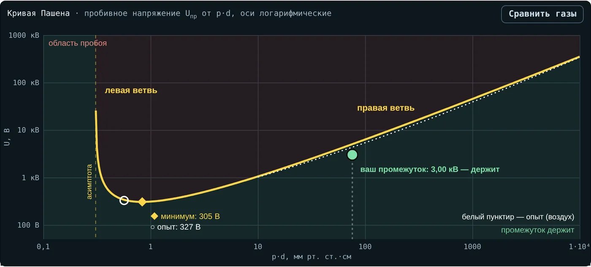
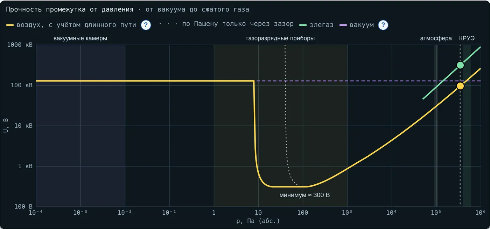
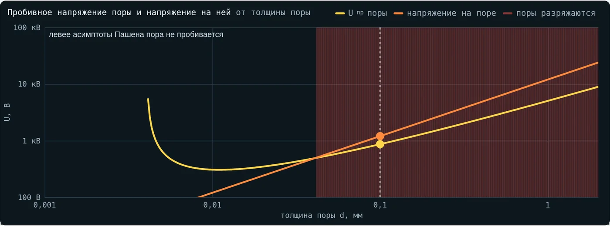

Техника высоких напряжений
Методическое пособие для студента
Закон Пашена, давление и плотность газа: как решать задачи
Справочные данные, алгоритм, разобранные примеры, задачи и реальные случаи · лекция 4
| Как работать с пособием. Просмотрите справочные данные. Повторите сами расчёты разобранных примеров. Решите задачи раздела 4 и сверьтесь с ответами в конце. Раздел 5 — вопросы к реальным случаям: ответьте письменно. Интерактив «Закон Пашена» помогает проверить себя: вкладки 1–4 считают те же величины, вкладка 6 — ещё 10 задач. |
1. Справочные данные
| Величина | Значение |
|---|---|
| Постоянные воздуха | A = 15 1/(см·мм рт. ст.), B = 365 В/(см·мм рт. ст.), γ = 0,01 |
| ln ln(1 + 1/γ) при γ = 0,01 | 1,529 |
| Минимум Пашена воздуха | по формуле 305 В при 0,84; по измерениям 327 В при 0,57 мм рт. ст.·см |
| Перевод единиц | 1 мм рт. ст. = 133,3 Па; 1 мм рт. ст.·см = 1,333 Па·м; 1 бар = 0,1 МПа |
| Нормальные условия | 760 мм рт. ст. (101,3 кПа), 20 °C, h = 11 г/м³ |
| Относительная плотность | δ = (p/760)·(293/T) |
| Плотность по высоте | δ ≈ e−H/8150 |
| Однородное поле в воздухе (pd > 10) | Uпр ≈ 24,22·δd + 6,08·√(δd) кВ, d в см |
| Атмосферная поправка | Kt = δm·kw; короткий однородный промежуток: m = 1, w = 0 |
| Высотный коэффициент | Ka = e(H−1000)/8150 при H > 1000 м |
| Элегаз, однородное поле | E ≈ (230p + 1,61)/26 кВ/мм, p в барах |
| Поле в плоской поре | Eв = εr·Eиз |
| Пробег электрона в воздухе | λe ≈ 37 мм·Па/p (≈ 0,37 мкм при 101 кПа) |
2. Алгоритм
Переведите давление в мм рт. ст., расстояние — в см; найдите pd.
Определите ветвь: сравните pd с минимумом (0,84 по формуле) и асимптотой (0,31).
Для pd до ≈ 10 — формула Пашена; для воздуха при pd больше ≈ 10 точнее эмпирическая формула с δd.
Для воздуха при нестандартной погоде найдите δ и Kt; испытательное напряжение умножайте на Kt, измеренное — делите.
Выше 1000 м умножьте требуемый уровень на Ka.
Для поры: поле в поре Eв = εr·Eиз, напряжение на поре Eв·d, сравните с Uпр поры по Пашену.
Проверьте порядок величины: минимум для воздуха — сотни вольт, 1 см при атмосферном давлении — 30 кВ.
3. Разобранные примеры
Пример 1. Пробой миллиметрового зазора
Дано: воздух, 760 мм рт. ст., однородный зазор d = 1 мм; A = 15, B = 365, γ = 0,01.
pd = 760·0,1 = 76 мм рт. ст.·см.
ln(A·pd) = ln 1140 = 7,039; ln ln(1 + 1/γ) = ln 4,615 = 1,529.
Uпр = 365·76/(7,039 − 1,529) = 27 740/5,510 = 5,03 кВ.
Ответ. 5,03 кВ по формуле; измерения и формула 24,22δd + 6,08√(δd) дают ≈ 4,3 кВ. Расхождение 15 % — постоянные A и B подходят в ограниченном диапазоне E/p.

Рис. 1. Проверка во вкладке 1: кнопка «Атмосфера, 1 мм»
Пример 2. Минимум Пашена воздуха и азота
Дано: воздух: A = 15, B = 365, γ = 0,01; азот: A = 12, B = 342, γ = 0,041.
Воздух: ln(1 + 1/γ) = 4,615; pdmin = e·4,615/15 = 0,836 мм рт. ст.·см; Umin = (e·365/15)·4,615 = 305 В.
Азот: ln(1 + 1/0,041) = 3,234; pdmin = e·3,234/12 = 0,733; Umin = (e·342/12)·3,234 = 251 В.
Ответ. Воздух 305 В при 0,84; азот 251 В при 0,73. Измерения: 327 В при 0,57 и 251 В при 0,67.
Пример 3. Закон подобия
Дано: модель газового промежутка уменьшена в 5 раз; натура работает при 0,1 МПа.
Чтобы сохранить pd, давление в модели увеличивают в 5 раз: 0,5 МПа.
Пробивное напряжение модели равно натурному.
Ответ. 0,5 МПа. На практике при таком давлении уже заметны отклонения из-за электродов, поэтому модель проверяют и экспериментом.
Пример 4. Парадокс левой ветви
Дано: воздух при 0,4 мм рт. ст.; зазоры 1 и 2 см.
1 см: pd = 0,4; U = 365·0,4/(ln 6 − 1,529) = 146/0,263 = 556 В.
2 см: pd = 0,8; U = 292/(ln 12 − 1,529) = 292/0,956 = 306 В.
Ответ. Зазор 2 см пробивается при меньшем напряжении. В разреженном газе разряд идёт по длинному пути.

Рис. 2. Вкладка 1, кнопка «Парадокс левой ветви»
Пример 5. Морозный антициклон
Дано: −30 °C, 775 мм рт. ст.; однородный промежуток 2 см, при нормальных условиях 57,0 кВ.
δ = (775/760)·(293/243) = 1,020·1,206 = 1,230.
Для короткого однородного промежутка m = 1, w = 0: Kt = δ = 1,23.
U = 57,0·1,23 = 70,1 кВ.
Ответ. ≈ 70 кВ — на 23 % больше, чем при нормальных условиях.

Рис. 3. Вкладка 2, кнопка «Апатиты: мороз, антициклон»
Пример 6. Испытание с поправкой
Дано: норма 95 кВ; в день испытания 735 мм рт. ст., +25 °C; изоляция с короткими однородными промежутками.
δ = (735/760)·(293/298) = 0,967·0,983 = 0,951.
Kt = δ = 0,951; U = 95·0,951 = 90,3 кВ.
Ответ. Подают 90,3 кВ. Если подать 95 кВ, изоляцию испытают жёстче нормы.
Пример 7. Высота 2500 м
Дано: грозовой импульсный уровень оборудования нормального исполнения 75 кВ.
Ka = e(2500 − 1000)/8150 = e0,184 = 1,202.
Требуемый уровень при нормальных условиях: 75·1,202 = 90,2 кВ.
Ответ. Не меньше 90,2 кВ — выбирают ближайший больший стандартный уровень.
Пример 8. Утечка элегаза
Дано: однородный зазор 10 мм; давление 0,5 → 0,35 МПа.
E(5 бар) = (230·5 + 1,61)/26 = 44,29 кВ/мм; U = 443 кВ.
E(3,5 бар) = (805 + 1,61)/26 = 31,02 кВ/мм; U = 310 кВ.
(443 − 310)/443 = 0,30.
Ответ. Прочность упала на 30 % — почти пропорционально давлению.

Рис. 4. Вкладка 3, кнопка «Утечка: 0,35 МПа»
Пример 9. Пора в литой изоляции
Дано: плоская пора 0,1 мм в эпоксиде, εr = 4, давление в поре 760 мм рт. ст.
pd = 760·0,01 = 7,6; Uпр = 365·7,6/(ln 114 − 1,529) = 2774/3,207 = 865 В.
Пробивное поле поры: 865 В/0,1 мм = 8,65 кВ/мм.
Поле в изоляции: 8,65/4 = 2,16 кВ/мм.
Ответ. Разряды начнутся при 2,16 кВ/мм.

Рис. 5. Вкладка 4: эпоксид, 0,1 мм, 760 мм рт. ст.
4. Задачи для самостоятельной работы
Однородный зазор 0,5 мм в воздухе при 760 мм рт. ст. Пробивное напряжение по формуле Пашена, В.
Зазор 2 мм в воздухе при 380 мм рт. ст. Пробивное напряжение по формуле Пашена, кВ (сравните с примером 1).
При каком зазоре воздух при 10 мм рт. ст. пробивается при наименьшем напряжении (по формуле), мм?
Летом в Апатитах 745 мм рт. ст. и +25 °C. Найдите δ.
Однородный промежуток 1 см при δ = 1,23. Пробивное напряжение по формуле 24,22δd + 6,08√(δd), кВ.
Норма 95 кВ, Kt = 1,10. Какое напряжение подать при испытании, кВ?
В день испытания при Kt = 0,94 измерили разрядное напряжение 120 кВ. Приведите к нормальным условиям, кВ.
Уровень изоляции 95 кВ нормального исполнения. Какой уровень нужен для высоты 3500 м, кВ?
Относительная плотность воздуха на высоте 4500 м по формуле δ = e−H/8150.
Однородный зазор 15 мм в элегазе при 0,4 МПа. Пробивное напряжение по E = (230p + 1,61)/26 кВ/мм, кВ.
Плоская пора 0,05 мм в изоляции из СПЭ (εr = 2,3) при 760 мм рт. ст. При каком поле в изоляции начнутся разряды, кВ/мм?
Зазор между выводами в отсеке ракеты 5 мм. При каком давлении зазор слабее всего, Па?
5. Реальные случаи: вопросы
Прочитайте случаи во вкладке 5 интерактива или в конспекте (раздел 9) и ответьте письменно.
Случай 1 (ракета Electron). Почему мера «сохранить давление в отсеке» помогает, а «откачать отсек до глубокого вакуума» — плохая идея при подъёме?
Случай 2 (Тибет). Во сколько раз примерно ниже разрядные напряжения воздушных промежутков на высоте 5300 м, чем у моря?
Случай 3 (КРУЭ). Почему датчик в КРУЭ измеряет именно плотность, а не давление?
Случай 4 (вакуумная камера). Почему отказ при одной полярности ещё не означает потерю вакуума?
Случай 5 (авиация). Почему для проводки самолёта важен и диапазон давлений, и толщина пор в изоляции?
Случай 6 (230 В). Почему газоразрядная лампа с минимумом Пашена 140 В может зажигаться от сети 230 В, а чистый воздушный зазор — нет?
6. Ответы к задачам раздела 4
| № | Ответ |
|---|---|
| 1 | 2880 В |
| 2 | 5,03 кВ |
| 3 | 0,836 мм |
| 4 | 0,964 |
| 5 | 36,5 кВ |
| 6 | 104,5 кВ |
| 7 | 127,7 кВ |
| 8 | 129,1 кВ |
| 9 | 0,576 |
| 10 | 531,7 кВ |
| 11 | 4,80 кВ/мм |
| 12 | 223 Па |